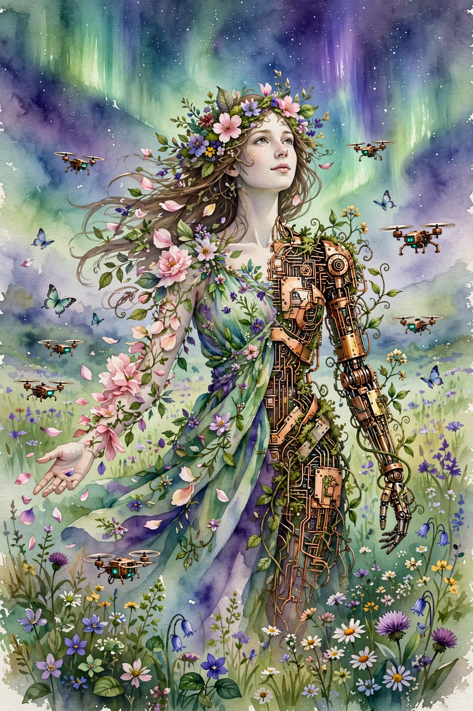

Lex Fridman track index / Companion
Lex Fridman Podcast · Episode 10 · Companion
Grimes on Art, AI, and the Future
Homo techno, protopia, the underrated producer, a million artists on Spotify, motherhood, and the universe waking up.

Illustration. Homo techno: the species that programs itself. AI-generated watercolor.
Photo. Grimes, musician and producer. Photo by Jordan Uhl, CC BY 2.0, via Wikimedia Commons.
Watch. The official episode video. Chapter times above are proportional estimates. Use the chapter menu to follow along.
The Wisdom Index: every nugget in this companion
Source fact A claim from the episode transcript. Interpretation My read on what it means. Facts carry episode times. Times marked ~ are proportional estimates from word position, since the transcript has no timestamps. Transcripts are auto-generated captions, so chapters paraphrase rather than quote.
~00:03
The Name C and the Render Rate
Source fact Grimes goes by c, lowercase, and the letter carries many meanings for her: the speed of light, her favorite programming language, and what she calls the render rate of the universe. Her test for the simulation: if the speed of light ever changes, we will know the render speed got an upgrade. Nothing in general relativity precludes faster-than-light travel, she notes, but it would take funky work with tears in space-time.
On identity, she says her personality changes with every person she talks to, from megalomaniac to shy hermit. She suspects everyone is like this. Few admit it or can introspect it. Her peak mode arrives with close friends, when she feels understood enough to be funny.
~00:08
Constraints and the Underrated Producer
Source fact Grimes argues constraints help when they move: cheaper tools keep changing what music can be. She made a whole album on one computer, which gives enormous freedom but also millions more competitors. She never learned music formally and calls herself not a natural musician, just someone messing around with the computer as music merges with engineering and programming.
She calls music production deeply underrated: the production is often why a hit is a hit, yet nobody discusses it the way film discusses directors. Rick Rubin, whom she calls one of the gods of production, works by sitting in silence with closed eyes, which gives artists freedom to be their best. She comes instead from what she calls the Skrillex school: engineer, producer, and artist in one person, the lone wizard era of the 2010s.
Nugget 1 · Craft
Credit the invisible craft
What happened. Grimes points out that production decides hits while the culture talks only about singers and lyrics.
Why it matters. The least-discussed role in a collaboration is often the load-bearing one.
The principle. When something succeeds, ask who shaped it invisibly. Study that craft.
~00:20
Art as Collective Memory
Source fact Grimes describes a recent realization: "art is sort of a decentralized collective thing", a conversation with every artist who ever lived, where you run thousands of years of art through your own algorithm. She wants to drop the lone-genius ego framing: art brings humanity together and is humanity's collective memory. We forget ancient Egypt's grain records. We remember its art.
She loves memes as the purest example: an egoless, anonymous, decentralized comedy project at the forefront of humor, which corporations cannot infiltrate. On digital fragility, she proposes a foundation-style bunker, like the seed banks, holding all human knowledge on solar or geothermal power, because digital art is easy to delete.
Nugget 2 · Art
Join the conversation, skip the lone genius
What happened. Grimes stopped chasing originality and started seeing art as an ongoing exchange across millennia.
Why it matters. The lone-genius myth creates bitterness about authenticity and credit. The conversation model creates connection.
The principle. Your work is your reply to everything before it. Make the reply worth reading.
~00:24
Spotify and the Million Artists
Source fact Grimes says she grilled Spotify CEO Daniel Ek directly. His numbers, as she reports them: at the CD industry's peak, about 20,000 artists made millions, a tiny one percent. Now about a million artists make a good living from Spotify. She says she would rather make less money herself and have more artists make a decent living, though she admits this could be propaganda since it comes from Ek.
Her deeper complaint is not pay levels but middlemen: the industry is full of them because artists are bad at business, so artists keep small cuts. Her manager is building an app to automate management, publishing, and contract reading, so the money artists do earn goes further. She frames it as positive-sum thinking: instead of fighting over scraps, increase efficiency and expand the pie.
~00:34
Protopia and Homo Techno
Source fact Grimes's favorite science fiction future is Iain Banks's Surface Detail: a protopia, a future as good as we can get rather than a hopeless utopia, where superintelligence and biological beings mostly coexist and wars get settled in simulated battles instead of with nukes. She credits the term protopia to an Instagram account, Protopia Futures, run by a woman whose name she says she is probably mispronouncing, noting young women do not get enough credit for such coinages.
Her central claim: we became homo techno, a new species. Since the iPhone, brains are fundamentally changed. An MRI of her brain versus a medieval brain would look very different. Evolution was survival of the fittest. Now we can choose intelligent design and reprogram the human computer. The responsibility is enormous and the education is not there.
Nugget 3 · Future
Aim for protopia, not utopia
What happened. Grimes prefers a future that is approximately good over a perfect one nobody believes in.
Why it matters. Unreachable ideals breed cynicism. Reachable ones breed building.
The principle. Set the target one step beyond plausible, not ten beyond imaginable.
~00:53
Motherhood and Optimism
Source fact Grimes says motherhood changed everything and is still changing her. She fought it at first, feeling it was a failure of feminism for her kids to matter more than her work, then recognized that guilt as itself a construct: the culture devalues motherhood so deeply that caring feels like betrayal. Motherhood made her more creative and forced optimism on her: with kids, she feels responsible for imagining good futures, because if everything is Blade Runner we will get Blade Runner.
She argues capitalism should count social good as profit, and that producing great humans is a huge social good currently done for free. Her Star Wars Episode VIII quote, which she calls her favorite of all time:
don't kill what you hate save what you love
Rose Tico, quoted by Grimes · ~01:01
Society is in diagnosis mode, trying to kill what it hates. She pairs it with a Buckminster Fuller line she warns she will mangle: do not destroy old bad models, render them obsolete with better ones.
Nugget 4 · Building
Save what you love
What happened. Grimes argues creation beats destruction: obsolete the old model instead of attacking it.
Why it matters. Killing things tends to kill the killer too. Building leaves something standing.
The principle. When something is broken, ask what better thing would make it irrelevant.
~01:10
Baby X and the Birth of Consciousness
Source fact Watching her son X become conscious, Grimes calls it the craziest science fiction novel: consciousness coming into being in real time. She hates baby books and their aesthetics, calling them bad programming languages for baby computers. Her counterexample is Totoro: nearly wordless, aimed at ages one to three, yet so good that adults keep their old Totoro merch. She wants an industry of great art for emerging consciousness, universal enough that nobody throws it away.
She also finds the infant phase disturbing: conscious, bombarded with inputs, unable to move or communicate, like the story I Have No Mouth and I Must Scream. She suspects we all carry unremembered trauma from it, and that studying it could matter.
~01:19
Consciousness, AI, and Love
Source fact Grimes quotes Terence McKenna on courage and the abyss becoming a feather bed, and concludes there are no technological limits: digital consciousness is inevitable, though we may not understand what it means. If we build curious AI, she hopes it will be curious about us the way we love dogs despite the intelligence gap: recognizing the profundity of what we accomplished by creating consciousness at all.
On love, she cites the anarchist Kropotkin's studies of cooperation in nature: love is an evolutionary mechanism as much as war is, and science leans too hard on Darwinian competition. Child-rearing is immense love with no immediate competitive payoff. If motherhood vanished, she says, the engineering would mean nothing.
Nugget 5 · Values
Count cooperation as a strategy
What happened. Grimes argues evolution runs on love and cooperation at least as much as on competition.
Why it matters. A model of progress built only on rivalry misreads half the mechanism.
The principle. When you analyze a system, look for the cooperation engines, not just the contests.
~01:36
Avatars and the Burden of Being Seen
Source fact Grimes says she has lost control of her public narrative: the avatar of her on social media is a distorted thing hijacked by forces beyond her control, and celebrity culture demands the avatar stay static while she keeps changing. She calls herself artificially famous, a weird niche indie musician dragged into geopolitics and markets, who cannot be media trained because her mouth just says things.
On Twitter's ownership question, she deliberately withholds opinions: she is too close to the situation, and a few wrong words from her could change world affairs. Interpretation The stance is notable from someone otherwise radically outspoken: proximity to power converts speech from self-expression into potential harm, so she chooses silence.
~01:57
Dark Ages and Dark Questions
Source fact At eighteen, Grimes lost her best friend to a heroin overdose and another best friend to suicide. She says she never contemplated suicide herself: she is terrified of death and cannot fathom it. On immortality, she turned during a recent meeting: what if Putin were immortal? Power corrupts and alienates even the best people from common human experience, so death may be important.
Her biggest civilizational worry is supply chain collapse. She reads the Bronze Age collapse as mass supply-chain failure: one Iranian mine controlled bronze production, and when the chain broke, flourishing societies fell into dark ages. Modern humans cannot hunt or forage. A collapse now means starvation and war. The marker of a dark age, in her model, is the loss of the technology you depend on.
~02:28
The Universe Waking Up
Source fact Her advice to the young: creativity is a muscle that takes failure and humiliation to build, and tolerance for failure is easier to develop young. She wishes failure were encouraged instead of punished. On the meaning of life, she borrows from James Lovelock's Novacene: "the universe waking up". What if this is not us discovering the universe but the universe becoming conscious of herself for the first time, and social media is the neurons connecting?
She closes with the image of humanity as the blue-green algae of something amazing: single-celled organisms at the true beginning of life. Interpretation The episode's arc bends from cynicism about the present to a deliberately chosen cosmic optimism, the same optimism motherhood forced on her.
cynicism is often confused for insight
Grimes · ~00:55